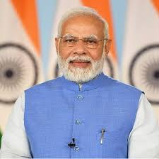
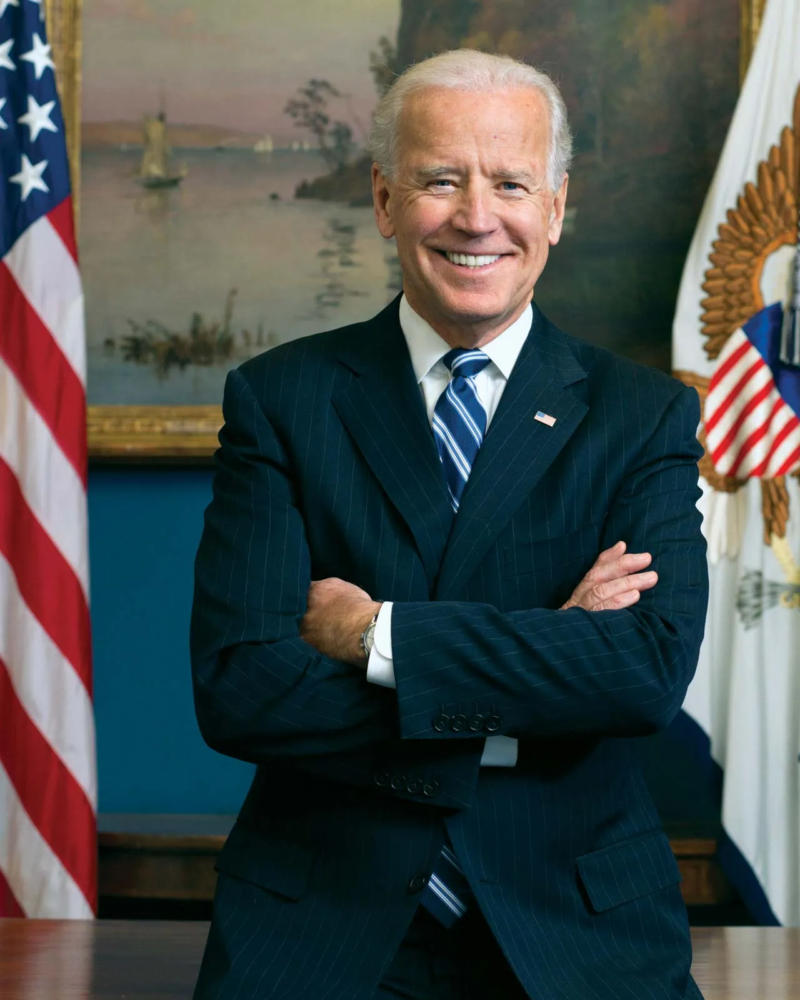

Data
| Sr.No | Name | Capital | President name / Prime Minister | Photo |
|---|---|---|---|---|
| 1 | India | Delhi | Narendra Modi (Prime Minister) |  |
| 2 | USA | Washington, D.C. | Joe Biden |  |
| 3 | England | London | Rishi Sunak (Prime Minister) |  |
| 4 | Russia | Moscow | Vladimir Putin |  |
| 5 | Japan | Tokyo | Fumio Kishida |  |
| 6 | Sri Lanka | Colombo | Dinesh Gunawardena |  |
| 7 | Australia | Canberra | Anthony Albanese (Prime Minister) |  |
| 8 | Germany | Berlin | Frank-Walter Steinmeier |  |